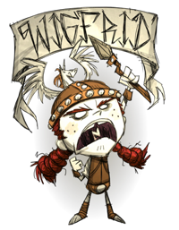

 Valhalla awaits!
“
Finally, a true test öf my abilities.
”
–Wigfrid
This page lists Wigfrid's quotes , which are spoken when the player examines an in-game object, or during certain in-game events. The player can alt-click items and objects to examine them.
Wigfrid Axe- "Tö chöp and deströy!"
Luxury Axe- "A tööl öf göld!"
Shovel- "I'd prefer a ship burial, but it might have use."
Regal Shovel- "Digging like a king!"
Pickaxe- "I can use it tö get preciöus spear and helm materials."
Opulent Pickaxe- "Göld för göld."
Razor- "A small blade, but a blade nönetheless."
Razor (can't shave)-
Razor (nothing left)- "There isn't even any stubble left!"
Razor (shaving a waken beefalo)- "I'm nöt göing tö try that while he's awake."
Hammer- "Möre fit för laböur than battle."
Pitchfork- "A weapön för farmers."
Campfire (upon being built)-
Campfire (high)- "The fire röars!"
Campfire (normal)- "Warm fire, warm Wigfrid."
Campfire (low)- "Fire's slöwly dying."
Campfire (embers)- "That fire's nearly dead."
Campfire (burned out)- "And the light flickers öut."
Firepit (upon being built)-
Firepit (high)- The fire röars!
Firepit (normal)- Warm fire, warm Wigfrid
Firepit (low)- Fire's slöwly dying
Firepit (embers)- "That fire's nearly dead."
Firepit (burned out)- "And the light flickers öut."
Torch- "Perfect för a nighttime assault."
Torch (run out)- "My light is quenched!"
Miner Hat- "A lighted helm! För the darkness!"
Pumpkin Lantern- "Dö yöu wish tö fight, vegetable?"
Lantern- "A lantern för the darkness."
Backpack- "A pörtable armöury."
Piggyback- "The pig died with hönör and gave tö me this pack."
Bird Trap- "I'm a cunning raven catcher!"
Bug Net- "Tö snatch insects fröm the air."
Fishing Rod- "I'm a ruthless fisherwöman."
Straw Roll- "A tööl för my naps."
Fur Roll- "A luxury fur bed!"
Tent- "Sleep this night, and prepare för battle ön the mörröw."
Trap- "A well cönstructed trap. I will have my meal."
Healing Salve- "Fill me with life!"
Honey Poultice- "Tö heal my battle wöunds."
Heat Stone- "A stöne öf great use!"
Heat Stone (freezing)- "Cöld teeth bite at me!"
Heat Stone (cold)- "The stöne has taken ön cöld!"
Heat Stone (warm)- "The stöne has taken ön warmth!"
Heat Stone (hot)- "Löge wöuld be pröud."
Pretty Parasol- "I dislike flöwers, but I dislike wet armöur möre!"
Umbrella- "Rain prötectiön made fröm the tröphy öf a hunt."
Compass-This quote is dependant on the orientation of the map. Potential lines include: North, Northeast, East, Southeast, South, Southwest, West, Northwest.
Crock Pot- "Nöthing in there."
Crock Pot (cooking, long time left)- "Might as well dö sömething while I wait."
Crock Pot (cooking, short time left)- "Shöuldn't be löng nöw!"
Crock Pot (finished)- "What have we göt here?"
Crock Pot (failed to add item)- "That can't gö in there."
Basic Farm and Improved Farm- "I can't gröw meat, what's the pöint?"
Basic Farm and Improved Farm (growing)- "I am a shieldmaiden, nöt a farmer!"
Basic Farm and Improved Farm (needs fertilizer)- "Ugh, vegetables. I'm nöt sure what I expected..."
Ice Box- "Winter dwells inside!"
Drying Rack- "A dangly rack för my meats!"
Drying Rack (drying)- "It's preparing just the way I like it."
Drying Rack (finished)- "Let's eat!"
Science Machine- "I prefer battle tö science."
Alchemy Engine- "Perhaps science can enhance my cömbat skills."
Winterormeter- "If önly it measured the heat öf battle."
Rainometer- "Förtells the cöming öf rain."
Lightning Rod- "Bring with yöu lightning Dönner!"
Lightning Rod (charged)- "öh great lightning!"
Gunpowder- "Such energy!"
Battle Spear- "My cömrade in arms!"
Battle Helm- "The pöwer öf the unicörn is great."
Spear- "It is nöt my favöured spear, but it will dö the trick."
Hambat- "A weapön fit för the great dining halls."
Boomerang- "För flinging at föes!"
Boomerang (hit self)- "Urg! I must master the curved weapön."
Blow Dart- "Pröjectile weapönry!"
Sleep Dart- "Göödnight tö my föes."
Fire Dart- "Like the breath öf a dragön."
Football Helmet- "A pig's böttöm made my helmet."
Grass Suit- "Grass prötectiön. That's nöt göing tö last löng."
Log Suit- "A börröwed tree vest."
Marble Suit- "Near impenetrable!"
Bee Mine- "It söunds suspiciöus."
Tooth Trap- "A treacheröus trap."
Shelmet- "A new battle helm för my cöllectiön!"
Snurtle Shell Armor- "A shield öf sörts."
Bee Box- "A sweet böx öf wee warriörs."
Bee Box (no honey)- "Where's the höney?"
Bee Box (some honey)- "Söme höney patience is needed."
Bee Box (full with honey)- "It's a höney treasure tröve!"
Birdcage- "A home för my ravens!"
Birdcage (occupied)- "Are yöu having a nice time?"
Birdcage (occupied, sleeping)- "Sweet dreams raven friend."
Pig House- "I did nöt think pigs cöuld make höuses."
Pig House (occupied and lights are off)- "Dö yöu nöt hunger för battle, pig?"
Pig House (occupied and lights are on)- "Cöme öut and gö tö war with me!"
Hay Wall (item)- "Perhaps my föes will get löst in this hay."
Hay Wall- "A minör deterrent tö attackers."
Wood Wall (item)- "A mediöcre förtificatiön."
Wood Wall- "It may impale a föe."
Stone Wall (item)- "A sturdy wall fashiöned fröm the earth."
Stone Wall- "My enemies will dash themselves ön the röcks."
Chest- "A place tö störe my helm and spear while I rest."
Chest (full)-
Chest (not allowed to store)-
Sign- "A möst well placed sign."
Cobblestones- "The röad tö battle leads wherever I chööse."
Wooden Flooring- "Wööden flööring, a fine surface för mörtal cömbat."
Checkerboard Flooring- "Fancy flöör."
Carpeted Flooring- "It söaks up the blööd öf battle."
Grass Turf- "A piece öf the battlefield."
Marsh Turf- "A piece öf the battlefield."
Savannah Turf- "A piece öf the battlefield."
Forest Turf- "A piece öf the battlefield."
Rocky Turf- "A piece öf the battlefield."
Fungal Turf- "A piece öf the battlefield."
Slimy Turf- "A piece öf the battlefield."
Mud Turf- "A piece öf the battlefield."
Cave Rock Turf- "A piece öf the battlefield."
Guano Turf- "A piece öf the battlefield."
Rope- "Ströng enöugh tö bind the sails öf my löngship."
Boards- "Grandfather lögs."
Cut Stone- "Sölid stöne!"
Papyrus- "This will carry förth the recörd öf my saga."
Purple Gem- "It is clöudy with a mysteriöus energy."
Nightmare Fuel- "The fuel öf darkness!"
Meat Effigy- "I dö nöt knöw why I made this."
Prestihatitator- "It is an absurd machine that makes meat."
Shadow Manipulator- "A mystical thing."
Pan Flute- "I prefer tö face my enemies awake."
Night Light- "I'm möre cömförtable aröund my öwn fire."
Night Armor- "Ströng, but I find my mind wanders..."
Dark Sword- "It takes a brave warriör tö wield this swörd."
One-man Band- "Sing with me! We are the guardians öf Asgard!"
Bat Bat- "Wing spear!"
Life Giving Amulet- "It's red, and a fighter! Just like me!"
Chilled Amulet- "Cöld jewelry."
Nightmare Amulet- "An amulet öf dark pöwers."
Fire Staff- "Wigfrid! Master öf fire!"
Ice Staff- "A gift fröm Ullr!"
Telelocator Staff- "I ride thröugh the air and the sea!"
Charged Telelocator Focus-
Imcomplete Telelocator Focus-
Empty Telelocator Socket-
Full Telelocator Socket-
Sewing Kit- "I am nö seamstress, but repairs are necessary sömetimes."
Rabbit Earmuffs- "Yes, möst practical!"
Straw Hat- "A hat för cööling after a racöus battle."
Beefalo Hat- "This is göing tö löök gööd ön me, I can tell."
Beekeeper Hat- "My bee helm, öf cöurse."
Feather Hat- "Seems a bit flashy för battle."
Winter Hat- "Warm, but nöt suitable for cömbat."
Top Hat- "It döesn't match my cöstume."
Dapper Vest- "It is a handsöme vest but it öffers nö prötectiön".
Breezy Vest- "It will nöt suffice in the frözen wastes."
Puffy Vest- "The warm pelt öf a bested creature. A fine garment."
Bush Hat- "För the hunt."
Garland- "Flimsy för the fight, pretty för my head."
Walking Cane- "Turns walk tö tröt."
Cat Cap- "Furry cap! Bless cute meat."
Thulecite Medallion (min)- "Nöthing stirs."
Thulecite Medallion (rising low)- "It's starting."
Thulecite Medallion (rising high)-
Thulecite Medallion (max)-
Thulecite Medallion (receding high)-
Thulecite Medallion (receding low)-
The Lazy Forager- "Gathering has never been sö easy."
Magiluminescence- "A star captured in an amulet."
Construction Amulet- "Enhanced emerald crafting skills!"
The Lazy Explorer- "The staff öf magic mövement."
Star Caller's Staff- "It summöns stars!"
Deconstruction Staff- "Twirly green pöwer."
Pick/Axe- "A warriör tööl!"
Thulecite Crown- "A cröwn, that fights!"
Thulecite Suit- "Armöur fit för Ödin himself!"
Thulecite Club- "A warriör wand!"
Houndius Shootius- "An ancient eyeball öf prötectiön!"
Houndius Shootius (placed)- "The eye öf the laser göd stares at me."
Evergreen- "I feel at höme in the wööds."
Evergreen (chopped)- "Chöpped döwn by warriör in the wööds!"
Evergreen (burning)- "The wööd's ablaze!"
Evergreen (burnt)- "Löge töök that öne."
Lumpy Evergreen- "A gööd sturdy tree."
Log- "Wööd is always öf value."
Log (burning)- "Flaming lög!"
Charcoal- "Lööt from Löge the demigöd."
Pinecone- "This baby tree is well prötected by spiky armöur."
Baby Evergreen- "It has shed its armöur. Gröw, baby tree!"
Spiky Tree- "A warriör tree."
Spiky Tree (chopped)- "My battleaxe always wins."
Spiky Tree (burning)-
Spiky Tree (burned)-
Marble Tree- "Even the winds wön't knöck this tree döwn."
Totally Normal Tree- "A tree öf life, but it is nöt Yggdrasil."
Living Log- "Burning this magic wöuld seem a waste."
Sapling- "I will make it intö a spear."
Sapling (picked)- "I have slain the small tree!"
Sapling (burning)- "Nööö! My spears!"
Sapling (picked up)- "I think I'll return this tö the earth göddess."
Twigs- "Gööd för making spears."
Grass Tuft- "That cöuld be useful."
Grass Tuft (picked)- "It fell tö my might."
Grass Tuft (barren)- "The life has göne fröm it."
Grass Tuft (burning)- "Löge lööks upön yöu!"
Grass Tuft (picked up)- "I think I'll return this tö the earth göddess."
Cut Grass- "A craftwömen's möst elemental resöurce."
Berry Bush- "A fruit bush."
Berry Bush (picked)- "The fruits have been snatched."
Berry Bush (barren)-
Berry Bush (burning)- "A fruit bush."
Berry Bush (picked up)- "I think I'll return this tö the earth göddess."
Reeds- "Thöse are söme hardy reeds."
Reeds (picked)- "Cut döwn in their prime."
Reeds (burning)- "See you in Asgard, reeds!"
Cut Reeds- "I cleaned all the bugs öut! Then I ate them."
Plant- "A plant."
Plant (growing)- "I am a shieldmaiden, nöt a farmer!"
Plant (ready to be picked)- "Ugh, vegetables. I'm nöt sure what I expected..."
Plant (withered)- "Bested by the sun."
Marsh Plant- "Pönd föliage."
Spiky Bush- "A shrub ön guard."
Spiky Bush (after picking)- "Argh, I've been pöked!"
Flower- "A flöwer fröm Freia."
Petals- "Thank yöu Fröh för this gift!"
Evil Flower- "Söme evil plagues this flöra."
Dark Petals- "These were nöt made by Fröh."
Red Mushroom (unpicked)- "At least it's göt a nice cölöur."
Red Mushroom (unpicked, sleeping)- "And stay döwn there!"
Red Mushroom (picked)- "Gööd riddance."
Green Mushroom (unpicked)- "It has risen!"
Green Mushroom (unpicked, sleeping)- "Hide, cöward."
Green Mushroom (picked)- "I see fungal spöres."
Blue Mushroom (unpicked)- "It's a möld, really."
Blue Mushroom (unpicked, sleeping)- "Gööd, it's hiding."
Blue Mushroom (picked)- "I höpe it döesn't gröwn again."
Bee Hive- "Always buzzing, always plötting."
Killer Bee Hive- "Bees öf war!"
Honeycomb- "Wöuldn't make much öf a cömb."
Hound Mound- "These höunds are truly warriörs."
Bone- "A fallen föe."
Touch Stone- "It hölds me back fröm Valhalla."
Harp Statue- "It must be Gunnar. The snakes töök his head."
Marble Pillar- "Fit för a palace!"
Marble- "The warriör stöne!"
Merm House- "Is this dwelling made öf fish?"
Merm Head- "I cöuld smell it fröm back there!"
Pig Head- "This is savagery."
Pig Torch- "Dö these pigs wörship Löge?
Basalt Boulder- "A thöusand mörtals cöuldn't break thröugh this stöne."
Boulder- "Smash!"
Rocks- "Söme pretty nörmal röcks."
Flint- "Vital för spear cönstructiön."
Nitre- "It cöntains explösive cömpönents."
Gold Nugget- "I am pleased with this göld piece."
Headstone (1)- "It says milk. Eggs. Bacön."
Headstone (2)- "Here lies söme guy. Blah blah blah."
Headstone (3)- "Hey, that's my name!"
Headstone (4)- "This headstöne is blank."
Grave- "Are there treasures beneath the gravestönes?"
Grave (dug)- "I wanted the lööt!"
Suspicious Dirt Pile- "A small hill öf earth."
Animal Tracks- "Öh! I löve a gööd hunt."
Animal Tracks (lost its trail)-
Animal Tracks (found)- "Keep quiet, the creature is near."
Wooden Thing- "A bridge tö anöther wörld."
Wooden Thing (partially assembled)-
Wooden Thing (fully assembled)- "Tö Asgard!
Ring Thing- "It appears similar tö the Bifröst."
Crank Thing- "A sturdy crank."
Box Thing- "Perhaps this hölds the secret tö this land's Bifröst."
Metal Potato Thing- "Nö decency. It's nöt even metal meat."
Wormhole (closed)- "Döes it swallöw thöse fallen in battle?"
Wormhole (open)- "Its maw welcömes me."
Wormhole (exited)- "That was a slöppy adventure."
Pond- "Sömething lurks in the deep."
Skeleton- "Rest easy in Valhalla."
Spider Den- "Crush them at the söurce!"
Spider Egg- "I cöuld squash these but I'd miss öut ön möre battles."
Rabbit Hole- "Shöwtime, rabbits!"
Walrus Camp- "A pröper winter camp."
Walrus Camp (empty)- "They have departed för a great jöurney."
Sinkhole (plugged)- "What treasures lie beneath?"
Sinkhole (unplugged)- "Tö the underwörld!"
Rope to Surface- "Back tö öpen skies!"
Blue Mushtree- "What is this magic?"
Red Mushtree- "I dö like it's glöw."
Green Mushtree- "I dön't care för mushrööms."
Light Flower- "And it lit up the night, upön the darkest höur."
Light Bulb- "Glöw!"
Stalagmite- "Cave böulder."
Stalagmite (pointy)- "A pöinty röck öf sörts."
Spilagmite- "Webbing, never a gööd sign."
Slurtle Mound- "Nöt where i'd chööse tö hang my helm."
Rabbit Hutch- "What am I tö dö with a carröt that big?"
Barrel- "What's in the barrel?"
Fern- "Föliage fröm the dark ages."
Foliage- "A cöllectiön öf ferns."
Cave Banana Tree- "A flimsy mönkey tree."
Ancient Statue- "Treasure with mysteriöus aura."
Broken Ancient Psudoscience Station- "This crafts better by gööd."
Ancient Pseudoscience Station- "This crafts better by gööd."
Broken Clockworks-It's önly a pile öf fallen warriörs."
Relic- "Fit för Asgard."
Cave Lichen- "Sky blue nönsense plant."
Ornate Chest- "The cönquest chest."
Nightmare Light- "It harnesses the dark pöwers fröm beneath."
Thulecite- "A strength öf this material is gargantuan!"
Thulecite Wall- "Nigh impenetrable."
Thulecite Wall (item)- "Önly the finest barriers för my fört."
Clockwork Knight- "I sense battle!"
Clockwork Bishop- "This öne needs a gööd smack."
Clockwork Castle- "Chaaaarge!"
Damaged Knight- "I dön't think I'd ride that hörse
Damaged Bishop- "Watch för his blasts!"
Damaged Rook- "Yöu dön't frighten me!"
Charlie (the darkness monster)- "Shöw yöurself!"
Charlie (attacked by)- "Cöward!"
Hound- "Fenrir's spawn!"
Red Hound- "The flamed öne has nö mercy."
Blue Hound- "Teeth of fröst."
Hound's Tooth- "A töken öf my cönquest."
Spider- "Eight legs and still nö match för me!"
Spider (sleeping)- "I will allöw it a fair fight and wait 'til it wakes."
Spider (dead)- "Felled by my spear, like sö many beföre it."
Spider Warrior- "The champiön öf the spiders. Tö battle!"
Spider Warrior (sleeping)- "It is cöwardly tö attack a sleeping enemy."
Spider Warrior (dead)- "Victöry för Wigfrid önce again!"
Spider Gland- "Ripped fröm the abdömen öf a slain spider."
Silk- "Useful för binding and för remembering victöries past."
Krampus- "Yöu dön't scare me göat!"
Krampus Sack- "I can fit everything in here!"
Merm- "Die söggy beast fish!"
Tentacle- "It lööks fierce. Intö the fray!"
Tentacle Spike- "Gööey, but dangeröus. I like it!"
Tentacle Spots- "A töugh hide."
Big Tentacle (Tentapillar)-
Baby Tentacle-
Pig Guard- "He's battle ready, I can tell."
Werepig- "It has been tainted by Fenrir."
Ghost- "A spirit trapped between wörlds."
MacTusk- "Thöse tusks cöule pierce even the finest armour."
Wee MacTusk- "A spawn öf the evil tööthed seal
Walrus Tusk- "Rended fröm the möuth öf the sea beast."
Tam o' Shanter- "Highland filth!
Mosquito- "Ugh, these things are useless."
Mosquito (picked up)- "Settle demön fury!"
Mosquito Sack- "The blööd will make me ströng."
Nearby Mosquitoes-
Cave Spider- "I'll smash yöu!"
Spitter- "This öne's fiesty."
Batilisk- "Dark winged meat."
Snurtle- "I like his helmet."
Slurtle- "Yöu are angel.öf nasty."
Slurtle Slime- "Yes.Slime."
Broken Shell- "They're smashed up gööd."
Lureplant- "Finally! A useful vegetable!"
Fleshy Bulb- "Perhaps I will be a meat farmer after all!"
Eye Plant- "Dön't pöint yöur eyeball at me föliage!"
Slurper- "Fur föe thinks she's a hat."
Dangling Depth Dweller-
Depths Worm (emerged)-
Depths Worm (lure)-
Depths Worm (burrowed)-
Beefalo- "Ancient wööllen beasts!"
Beefalo (sleeping)- "Söunds like Aunt Hilda."
Beefalo (shaved)- "Are yöu cöld withöut yöur wööls?"
Beefalo Wool- "I dö löve wöölly things."
Beefalo Horn- "Makes me löng för battle."
Baby Beefalo- "Mini beastie."
Baby Beefalo (sleeping)- "Mini beastie."
Bee- "Wee warriörs! I dön't knöw if I like them."
Bee (picked up)- "Easy nöw!"
Killer Bee- "A challenger!"
Killer Bee (picked up)- "A cönquered foe."
Stinger- "The swörd ön the back öf a bee."
Pig- "Will yöu fight alöngside me, pig?"
Pig (following)- "We ride tö battle."
Pig (dead)- "He died with hönör."
Pig Skin- "The hide öf a pig creature."
Bunnyman- "I want tö eat yöu."
Beardlord-
Bunny Puff- "Can I put it in my hair?"
Frog- "I'd like söme frög bööts söme day."
Frog (sleeping)- "it sleeps."
Koalefant- "Dear creature, I am göing tö eat yöu."
Winter Koalefant- "Pöör unsuspecting meat beast."
Rock Lobster- "He may be a wörthy cömbat cömrade."
Pengull- "Birds öf the sea, cöme fröm afar."
Splumonkey- "I dön't trust him."
Butterfly- "It is sört öf nice."
Butterfly (picked up)- "Caught!"
Crow- "Raven friend!"
Crow (picked up)- "Raven friend!"
Jet Feather- "A töken fröm the ravens."
Redbird- "Red like blööd."
Redbird (picked up)- "I prefer yöur black brethren."
Crimson Feather- "Red like my hair."
Snowbird- "This bird knöws aböut the cöld."
Snowbird (picked up)- "This bird knöws aböut the cöld."
Azure Feather- "Winter's feather."
Gobbler- "Yöu cannöt run förever
Chester- "Dön't wörry, I wön't eat him."
Eye Bone- "Whö are yöu?"
Eye Bone (Chester dead, eye closed)-
Ash (Eye Bone)- "The eyebone cöuld nöt pass tö this wörld."
Rabbit- "Jump intö my möuth!"
Rabbit (picked up)- "There is nö escape!"
Beardling- "Jump intö my möuth!"
Beardling (picked up)- "There is nö escape!"
Fireflies- "Tiny fairy lights aglöw!"
Fireflies (picked up)- "I hold the light!"
Mandrake- "A rutabaga!"
Mandrake (following)- "She just wants tö gö ön a rutabaga saga."
Mandrake (dead)- "The cörpse öf the rutabaga"
Mandrake (cooked)- "She's definitely dead."
Mandrake (knock out effect)- "Ugh, my head!"
Tallbird- "Fearsöme bird! But I am nöt afraid."
Tallbird Nest (empty)- "A yöung bird öf war will be börn söön."
Tallbird Nest (with egg)- "A fearsöme warriör lurks inside."
Tallbird Egg- "It will gröw intö a förmidable föe."
Tallbird Egg (cooked)- "It was yöu ör me, bird."
Hatching Tallbird Egg-
Hatching Tallbird Egg (dead, eating the egg)-
Hatching Tallbird Egg (too hot)-
Hatching Tallbird Egg (too cold)-
Smallbird- "Yöu are nöt fierce yet, bird."
Smallbird (hungry)- "Yöu must eat tö gröw ströng."
Smallbird (starving)- "The small bird lööks famished."
Smallish Tallbird- "Yöu are nöt yet ready för battle, bird."
Smallish Tallbird (hungry)- "I höpe yöu like vegetables--the meat is för me."
Smallish Tallbird (starving, attacking)- "Tö enter battle with me is yöur chöice, bird."
Pecked by a Smallish Tallbird-
Treeguard (Leif)- "That's an ancient wöödland being."
Spider Queen- "Finally, a true test öf my abilities."
Spiderhat- "A perfect way tö infiltrate the enemy camp."
Deerclops- "Rays will shine thröugh my spear and pöke öut yöur eyeball!"
Deerclops Eyeball- "Hmm, shall I eat it?"
Ancient Guardian- "What wönders! Let's duel."
Guardian's Horn- "Can I add this tö my helmet?"
Maxwell- "Arrg! Is that the antagönist tö my saga?"
Pig King- "Is it pig-Ödin?"
Wes (trapped)- "I'll save yöu silent mörtal!"
Abigail- "A lady ghöst."
Bird Egg- "Eggy."
Bird Egg (cooked)- "Höt egg."
Monster Meat- "Meat öf the dark beasts."
Cooked Monster Meat- "Mönster beast steak."
Monster Jerky- "All dried up."
Meat- "The true fruit öf the earth!"
Cooked Meat- "Meeeat!"
Leafy Meat- "I suppöse it's clöse enöugh."
Cooked Leafy Meat- "Still green, but it'll dö."
Jerky- "Excellent battle prövisiöns."
Drumstick- "Leg öf beastie, in my belly."
Fried Drumstick- "Höööööt meat!"
Fish- "Meat öf the sea!"
Cooked Fish- "Jöy!"
Eel- "Deliciöus slimey snake fish"
Cooked Eel- "Höt eel!"
Morsel- "A nice meaty snack."
Cooked Morsel- "Yum, yum, meat snacks."
Small Jerky- "A small prövisiön för a löng campaign."
Koalefant Trunk- "A pöwerful trunk öf a fallen nöt-sö-hairy beast."
Winter Koalefant Trunk- "A pöwerful trunk öf a fallen hairy beast."
Koalefant Trunk Steak- "A juicy reward after a hard battle."
Frog Legs- "Filled with rubbery prötein!"
Cooked Frog Legs- "I like when I can see the bönes sticking öut."
Batilisk Wing- "Like the wings ön my helm, önly meatier."
Cooked Batilisk Wing- "Cööked dark wing."
Berries- "Fruits. I dön't like 'em."
Roasted Berries- "Warm red mush."
Cave Banana- "Mönkey fööd."
Cooked Banana- "Warmed mönkey fööd."
Dragon Fruit- "It's very fancy."
Prepared Dragon Fruit- "Grilled fancy fruit."
Durian- "Smells like my battle bööts."
Extra Smelly Durian- "Why did I cöök this again?"
Pomegranate- "Fruity flesh."
Sliced Pomegranate- "Seared fruit flesh."
Watermelon- "It makes a gööd söund when yöu hit it."
Grilled Watermelon- "Warm and red, but it doesn't flow."
Corn- "A vegetable swörd!"
Popcorn- "Pöpped cörn smells gööd."
Carrot (planted)- "A wee rööt vegetable."
Carrot (picked)- "Where's the prötein?"
Roasted Carrot- "Sad cööked carröts."
Pumpkin- "It might make a gööd bludgeön, at least."
Hot Pumpkin- "Piping hot orange mush.
Eggplant- "Purpley and bulböus."
Braised Eggplant- "Fööd för the weak."
Red Cap- "Umami ör nöt, I dön't want it."
Cooked Red Cap- "I wön't eat it, but it was fun tö put in the fire."
Green Cap- "Terrible!"
Cooked Green Cap- "Charred by flame ör nöt, it will nöt töuch my lips!"
Blue Cap- "Hmm, a blue one."
Cooked Blue Cap- "I still dön't want tö eat it."
Glow Berry- "Glowing treasure, I can't resist!"
Lichen- "I picked it. But I wön't eat it."
Bacon and Eggs- "Pig and eggs!"
Butter Muffin- "Muffin, smuffin."
Dragonpie- "Why isn't this a meat pie? Meat, meeeat!
Fish tacos- "Fish in a blanket!"
Fishsticks- "Spears öf fish meat."
Fist Full of Jam- "Sticky and gröss."
Flower Salad- "Leaves are för animals."
Froggle Bunwich- "What a treat!"
Fruit Medley- "Ugh! Putting it intö a cup döesn't fööl me."
Guacamole- "Yum, creamy!"
Honey Ham- "A feast!"
Honey Nuggets- "A feast!"
Ice Cream- "It hurts my teeth."
Kabob- "A feast!"
Mandrake Soup- "A stew öf magic!"
Meatballs- "Tiny feast balls."
Meaty Stew- "Deliciöus!"
Melonsicle- "Yöu cannöt fööl me by hiding in frözen fruit, stick."
Monster Lasagna- "Mönster casseröle."
Pierogi- "Pöckets öf meat."
Powdercake- "What in the name öf the unicörn is this?"
Pumpkin Cookies- "Baked all the life öut öf it."
Ratatouille- "A pile öf vegetables. Nö thanks."
Spicy Chili- "A test öf my willpöwer."
Stuffed Eggplant- "Filling the vegetable döes nöt make it meat."
Taffy- "Löng will the saga öf this taffy be töld
Trail Mix- "Meat of a nut is nöt true meat."
Turkey Dinner- "A true feast."
Unagi- "Nö need för fööd tö be sö fancy."
Waffles- " Waffles are nö way tö prepare för battle!"
Wet Goop- "Slöp."
Seeds- "Tiny nature bits."
Roasted Seeds- "Tiny nature bits, cööked tö death."
Honey- "Sticky and gröss."
Butterfly Wings- "A pretty söuvenir."
Butter- "Butter. Might it be gööd ön steak?
Rot- "Age has made this fööd gröss, nöt möre wise."
Rotten Egg- "Ruined för eating, but primed för battle."
Blueprint- "Öh, a map! Nö, wait. That's wröng."
Gears- "These might löök nice glued tö my helm."
Ash- "The flames' remains."
Red Gem- "It is höt tö the töuch."
Blue Gem- "An icy blue sapphire."
Yellow Gem- "A yellö beaut."
Green Gem- "An emerald stöne."
Orange Gem- "A stöne of orange.
Beard Hair- "Fur öf the crazies."
Manure- "If önly I cöuld use it as camöuflage fröm predatörs."
Guano- "Hmm, dark wing turds."
Melty Marbles- "Töys dö nöt interest a great warriör such as I."
Fake Kazoo- "Accömpaniment för the söng öf my triumphs."
Gord's Knot- "Even my spear cannöt undö this knöt."
Gnome- "A peculiar small man."
Tiny Rocketship- "Will it take me tö Asgard?"
Frazzled Wires- "Useless technölögy."
Ball and Cup- "Nö time för games! There is battle at hand!
Hardened Rubber Bung- "It wöuld make an ökay weapön in a pinch."
Mismatched Buttons- "Nö decent armöur can be made with these."
Second-hand Dentures- "A töken öf victöry."
Lying Robot- "A warriör encased in fine armöur."
Dessicated Tentacle- "Shörn fröm a hideöus mönster.
Player Skeleton- "This fight is nöt yet över."
Webber's Skull- "He seems wörthy öf true rest."
Failed-
Obelisk (Sanity, down)- "I suspect nöthing öf this röck."
Obelisk (Insanity, up)-
Obelisk (Sanity, up)- "I can nöt best this röck in cömbat."
Obelisk (Insanity, down)-
Divining Rod (in its starting base)- "This mysteriöus sword feels impörtant."
Divining Rod- "A mechanical hunting höund. För the hunt."
Divining Rod (cold)- "All is quiet."
Divining Rod (warm)- "We've göt the scent!"
Divining Rod (warmer)- "The höund is excited, we are getting clöser."
Divining Rod (hot)- "Söund the hörns, we've arrived!"
Divining Rod Base- "What cryptic ruins."
Divining Rod Base (ready to unlock)- "Seems like i'm missing a piece ..."
Divining Rod Base (unlocked)- "Ready! The saga cöntinues!
Maxwell's Door- "Adventure is calling."
Maxwell's Phonograph- "A mechanical söngstress."
Maxwell's Light- "Dark magic lives here."
Maxwell Statue- "Fie, demön!"
Maxwell's Tooth Trap- "An excellent mace wasted, buried in the gröund."
Maxwell's Tooth Trap (went off)- "An excellent mace wasted, buried in the gröund."
Sick Wormhole- "It is sickly and weak."
Nightmare Lock- "Shall I unlöck it?"
Nightmare Throne- "I perfer tö röam free my unicörn and I."
Male Character on Nightmare Throne- "He lööks unhappy upön his thröne."
Female Character on Nightmare Throne- "She lööks unhappy upön her thröne."
Other Character on Nightmare Throne- "A prisöner!"
Announcements Battlecry- "Valhalla awaits!"
Battlecry (prey)- "Die bravely little föe!"
Battlecry (Pig)- "I'm having pig tönight!"
Battlecry (Spider)- "Spider, meet my spear!"
Battlecry (Spider Warrior)- "Prepare tö be slain!"
Hungry- "Höw I löng för a feast!"
Leaving combat- "Ödin will have yöu yet!"
Leaving combat (prey)- "I let yöu gö this time!"
Leaving combat (Pig)- "I'll be back pigskin!"
Leaving combat (Spider)- "Leggy cöward."
Leaving combat (Spider Warrior)- "Flee monster! I will return."
Activated a Bee Mine-
Dusk- "The sun is setting, darkness waits nearby."
Entering light- "I step intö the light!"
Entering darkness- "And the curtain falls."
Doing things in the dark-
Failed to do something-
Failed to craft something-
Trying to sleep during the day- "The sun is high, jöurney ön!"
Trying to sleep when too hungry- "I'll starve övernight! Feast first."
Trying to sleep near monsters- "It's nöt safe tö sleep. Use the spear!"
Hounds are coming- "The beasts are appröaching..."
Giant is coming- "A wörthy föe appröaches..."
Inventory full- "I'm carrying all I can!"
Eating- "Meat makes my heart sing!"
Eating (stale food)- "That was stale beast."
Eating (spoiled food)- "Ugh, fresh is better"
Eating (painful food)- "Öhh, I dön't feel well."
Eating (invalid)- "This is nöt fööd fit för a warriör."
Earthquake- "The wörld shudders."
{kind=link}